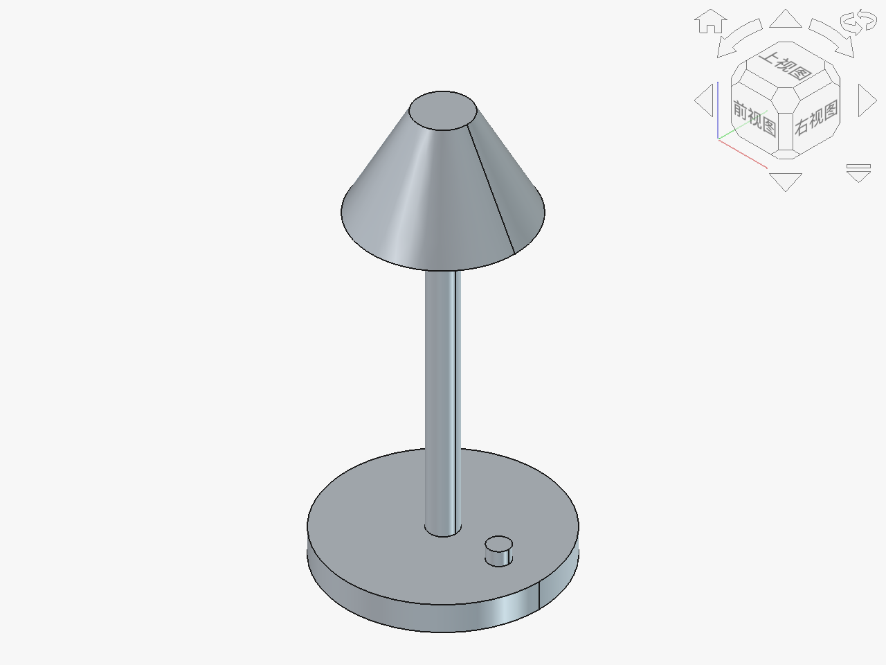

本节"制作台灯模型或原型"是苏教版《技术与设计1》第六章"模型或原型的制作"的核心实践节，标志着学生从"纸上设计"进入"实体物化"阶段。前序章节中，学生已完成方案的构思、计算机辅助设计等环节，掌握了从发现问题到CAD建模的完整设计链路；本节则要求学生将设计图样转化为可触摸、可测试的实物原型，是设计思维落地为工程产品的关键一步。
核心概念围绕"材料""工艺""装配""测试"四要素展开，它们构成原型制作的完整闭环：材料决定物理性能，工艺决定加工方式，装配决定结构关系，测试验证设计合理性。本节承上启下——向上承接第五章的CAD图样，将数字模型变为实体；向下连接第七章的设计评价与优化，原型测试中发现的问题正是优化方案的直接依据。台灯作为经典教学项目，兼具结构简单、功能明确、可迭代空间大的特点，是承载原型迭代四步法的理想载体。
高一学生大多缺乏手工制作经验，对材料特性（如亚克力易碎、PVC管可弯、木材可刨）和连接工艺（如胶粘、螺丝、榫卯）认知模糊，选材和工艺决策容易凭直觉而非工程依据。学生在制作中常遇到"图纸上能画出来但做不出来"的困境，对"设计可行性"缺乏体感。此外，当原型出现问题时（如灯罩歪斜、底座不稳），学生往往不知如何排查，容易直接放弃或盲目重做。教学中需引入"故障诊断"的方法支架，帮助学生建立"现象→原因→对策"的工程问题解决逻辑。
| 素养维度 | 具体目标 |
|---|---|
| 技术意识 | 认识模型与原型在设计流程中的验证价值，理解"原型是设计的试金石"，形成"先验证再定案"的工程意识。 |
| 工程思维 | 掌握原型迭代四步法（材料规划→工艺选择→制作组装→测试改进），能用系统化思维分析原型故障的因果关系，形成"现象→原因→对策"的排查逻辑。 |
| 创新设计 | 在原型测试发现问题后，能提出至少一种改进方案，并在改进中体现创新性（如改变底座配重方式、优化灯罩散热结构）。 |
| 图样表达 | 能根据CAD图样选择对应材料和工艺，将二维图样的尺寸要求转化为三维实体的加工依据，理解图样与实物的对应关系。 |
| 物化能力 | 能安全使用基本手工工具完成台灯原型的切割、连接、组装，至少完成一轮原型制作与测试改进，获得"从图样到实物"的完整物化体验。 |
教学重点：运用原型迭代四步法完成台灯原型的制作与首轮测试，经历"制作→测试→发现→改进"的完整迭代循环。
教学难点：原型故障的工程化诊断——学生需准确描述问题现象，结合结构原理分析可能原因，并从AI建议中筛选可行的改进方案，做出有依据的工程决策。
策略框架：采用OBE-GAI范式中的"虚实双线"策略——AI虚拟分析预判问题（虚线）与实物制作测试验证（实线）交织推进。AI作为"故障诊断顾问"在测试改进环节介入。
核心方法：
教师活动：展示教室阅读角照片：角落书架上有一摞书，但光线昏暗，同学阅读时需凑近窗户。抛出任务："教室阅读角需要一盏台灯，要求底座稳固、灯罩不烫手、光线柔和。我们上节课已经用CAD画了台灯设计图，今天就来把它做出来！"
学生活动：回顾上节课的台灯CAD设计图，思考"从图到实物需要哪些准备"。
过渡：教师展示一盏未完成或有缺陷的台灯原型（底座过轻导致倾倒），追问——"这盏灯做得出来，但能用吗？问题出在哪里？"引出"原型不仅要做得出来，还要测得了、改得好"的核心观念。
教师活动：讲解原型与模型的区别（模型侧重外观或结构展示，原型侧重功能验证），引出本课原创工具。
教师展示台灯原型装配体模型。该模型由底座、灯杆、灯罩三个零件组成，通过装配约束（底座与灯杆的同轴约束、灯杆与灯罩的面对齐约束）展示台灯的结构关系。教师切换装配体的爆炸视图，让学生直观看到三个部件如何组合——"先理解结构，再动手制作"。同时展示各零件的尺寸标注，作为学生备料和加工的依据。
渲染图：台灯模型 (DeskLamp)

该模型包含底座、灯杆、灯罩、灯泡和开关旋钮五个部件，完整呈现台灯的结构分解与装配关系。教师可通过爆炸视图帮助学生理解装配顺序，为实物制作提供三维参照。
学生活动：对照台灯CAD模型和材料样品台（教师准备的多种材料小样），在任务单上完成材料规划表和工艺选择表的填写。
学生活动（制作阶段，前8分钟）：学生分组按材料规划和工艺方案制作台灯原型。教师提供预制部件半成品（已切割的底板、灯杆、灯罩毛坯）以节省时间，学生聚焦组装与调试。重点完成底座与灯杆的连接、灯杆与灯罩的固定。
学生活动（测试阶段，后7分钟）：原型完成后，学生进行三项功能测试：
测试中，多数小组会发现问题——底座不稳、灯罩过热或光线不均。此时引入AI故障诊断。
学生用"问题现象描述模板"向AI描述测试中发现的问题，获取诊断建议：
典型交互示例：
学生活动（诊断阶段）：学生记录AI给出的可能原因和改进建议，逐条判断可行性，选择1-2项实施改进。改进后重新测试，记录迭代效果。
学生须在任务单上填写：① 问题现象（客观描述，不带主观判断）；② AI给出的可能原因（逐条列出）；③ 我的判断与采纳方案（含否决理由）；④ 改进后测试结果。此项记录纳入过程性评价，重点考查学生的工程决策能力而非AI回答质量。
教师巡视指导：重点关注两类学生——一类是"全盘照搬AI建议不做判断"的，教师追问"你觉得这条建议在你的材料条件下可行吗"；另一类是"拒绝AI建议自己硬试"的，教师引导"AI的建议可以参考，关键是你要知道为什么采纳或否决"。
学生活动：各组展示改进前后的台灯原型对比，用30秒说明"发现了什么问题、AI建议了什么、我做了什么改进、效果如何"。
交叉互评：每组对相邻组的原型进行"故障挑刺"——尝试找出对方原型仍存在的问题，并提出改进思路。此环节模拟真实工程中的设计评审。
教师活动：引导归纳常见原型问题类型：结构稳定性问题（重心、力矩）、材料适配问题（强度、耐温）、工艺精度问题（连接松动、尺寸偏差）。帮助学生建立原型问题分类框架。
师生共结：回顾原型迭代四步法，强调"原型不是终点，测试改进才是"——好的原型一定经过至少一轮迭代。AI作为故障诊断顾问提供了可能原因和方向，但最终改进决策和实施由学生完成，"AI给方向，学生做决策"。
课后任务：整理台灯原型和AI诊断记录单，下节课将用于设计评价与优化环节。思考"你的原型还有哪些可以优化的地方"。
一、原型 vs 模型：功能验证 > 外观展示
二、原型迭代四步法
① 材料规划：选材 + 备料清单
② 工艺选择：切割 + 连接方式
③ 制作组装：按图施工 + 精度控制
④ 测试改进：稳定性 / 温度 / 照明 → 迭代
三、故障诊断：现象 → 原因 → 对策
四、AI = 故障诊断顾问（方向 > 决策）
优势预设：原型迭代四步法将松散的制作过程结构化为四步，学生不会陷入"埋头做不思考"的状态。虚实双线设计使AI在测试改进环节自然介入——学生遇到真实问题时主动求助AI，AI的使用动机内生于项目需要而非外部强制。故障诊断模板规范了学生的问题描述方式，培养了工程化表达习惯。
风险预设：①课堂时间极为紧张，15分钟内完成制作+测试+AI诊断+改进有难度，需提前准备半成品部件确保制作环节不超时；②学生制作水平差异大，部分小组可能原型都做不完就到测试环节，需准备"教师预制原型"供这些小组直接用于测试和AI诊断；③AI给出的改进建议可能涉及课堂无法实施的操作（如"重新切割底座"），教师需引导学生聚焦"课堂可行的改进"（如配重、调整灯罩开孔）。
改进方向：下次可将本节扩展为2课时，第一课时聚焦制作与测试，第二课时聚焦AI诊断与深度改进，让学生有充足时间经历完整的迭代循环。
AI融合范式 本教案采用OBE-GAI范式的"虚实双线"策略，AI定位为"故障诊断顾问"。
| 线索 | 环节 | 内容 | AI角色 |
|---|---|---|---|
| 虚线 | 环节二 | AI辅助工艺可行性预判 | 工艺顾问 |
| 实线 | 环节三前半 | 实物制作与功能测试 | （不介入） |
| 虚实交汇 | 环节三后半 | AI故障诊断 + 学生实物改进 | 故障诊断顾问 |
| 实线 | 环节四 | 迭代原型展示与互评 | （不介入） |
AI仅在"测试发现问题后"介入，而非制作前就让学生问AI"怎么做好"。这一时序设计确保学生先经历真实的制作与测试体验，再借助AI解决自己亲手发现的问题——问题来源于实践，AI建议回归实践验证，形成闭环。
模板要求学生先客观描述"问题现象"和"台灯结构参数"，再请AI分析原因。这种"先数据后诊断"的方式模拟了真实工程师的故障排查流程，避免学生用模糊语言（如"不好用""有问题"）向AI提问而得到泛泛回答。结构化输入才能获得结构化诊断。
学生必须记录AI建议的"否决理由"——即使全部采纳也要说明为什么每条都可行。教师重点关注"部分采纳"的案例，在展示环节邀请学生分享"我为什么否决了AI的某条建议"，强化"AI是顾问、学生是决策者"的核心定位。
FreeCAD模型引用 本教案引用台灯原型装配体模型（底座+灯杆+灯罩装配体），展示台灯三部件的结构关系与装配约束。教师通过爆炸视图帮助学生理解"整体由部件组装"的装配逻辑，为实物制作提供结构参照。模型可作为学生备料和尺寸校验的可视化依据。
渲染图：台灯模型 (DeskLamp)
该模型包含底座、灯杆、灯罩、灯泡和开关旋钮五个部件，完整呈现台灯的结构分解与装配关系。教师可通过爆炸视图帮助学生理解装配顺序，为实物制作提供三维参照。